if (!require('pacman', character.only = T)){
install.packages('pacman')
}Loading required package: pacmanlibrary('pacman')Firstly, the code below will check if pacman has been installed. If it has not been installed, R will download and install it, before activating it for use during this session.
if (!require('pacman', character.only = T)){
install.packages('pacman')
}Loading required package: pacmanlibrary('pacman')Next, pacman assists us by helping us load R packages that we require, sf, tmap and tidyverse. terra is included as it is a dependency of tmap which may not install/load if terra has not been installed prior.
pacman::p_load(sf, tidyverse, tmap, terra)The following public datasets are used:
| Dataset Name | Source |
|---|---|
| Master Plan 2014 Subzone Boundary (Web) (MP14_SUBZONE_WEB_PL.shp) | data.gov.sg |
| Singapore Residents by Planning Area / Subzone, Age Group, Sex and Type of Dwelling, June 2011-2020 (respopagesextod2011to2020.csv) | Department of Statistics, Singapore |
The Master Plan 2014 Subzone Boundary (Web) has been extracted to Hands-on_Ex02/data/geospatial whereas the Department of Statistics Singapore Resident dataset has been extracted to Hands-on_Ex02/data/aspatial.
Firstly, we will import Master Plan 2014 Subzone Boundary (Web).
mpsz = st_read(dsn = "Hands-on_Ex02/data/geospatial", layer = "MP14_SUBZONE_WEB_PL")Reading layer `MP14_SUBZONE_WEB_PL' from data source
`C:\renjie-teo\IS415-GAA\exercises\Hands-on_Ex02\data\geospatial'
using driver `ESRI Shapefile'
Simple feature collection with 323 features and 15 fields
Geometry type: MULTIPOLYGON
Dimension: XY
Bounding box: xmin: 2667.538 ymin: 15748.72 xmax: 56396.44 ymax: 50256.33
Projected CRS: SVY21From the above message, it tells us that the dataset contains multipolygon features, containing 323 multipolygon features and 15 fields in the mpsz simple feature data frame and is in the svy21 projected coordinates system. The bounding box provides us the x and y extents (x min, x max, y min, y max) of the data.
We can use mpsz to examine the contents.
mpszSimple feature collection with 323 features and 15 fields
Geometry type: MULTIPOLYGON
Dimension: XY
Bounding box: xmin: 2667.538 ymin: 15748.72 xmax: 56396.44 ymax: 50256.33
Projected CRS: SVY21
First 10 features:
OBJECTID SUBZONE_NO SUBZONE_N SUBZONE_C CA_IND PLN_AREA_N
1 1 1 MARINA SOUTH MSSZ01 Y MARINA SOUTH
2 2 1 PEARL'S HILL OTSZ01 Y OUTRAM
3 3 3 BOAT QUAY SRSZ03 Y SINGAPORE RIVER
4 4 8 HENDERSON HILL BMSZ08 N BUKIT MERAH
5 5 3 REDHILL BMSZ03 N BUKIT MERAH
6 6 7 ALEXANDRA HILL BMSZ07 N BUKIT MERAH
7 7 9 BUKIT HO SWEE BMSZ09 N BUKIT MERAH
8 8 2 CLARKE QUAY SRSZ02 Y SINGAPORE RIVER
9 9 13 PASIR PANJANG 1 QTSZ13 N QUEENSTOWN
10 10 7 QUEENSWAY QTSZ07 N QUEENSTOWN
PLN_AREA_C REGION_N REGION_C INC_CRC FMEL_UPD_D X_ADDR
1 MS CENTRAL REGION CR 5ED7EB253F99252E 2014-12-05 31595.84
2 OT CENTRAL REGION CR 8C7149B9EB32EEFC 2014-12-05 28679.06
3 SR CENTRAL REGION CR C35FEFF02B13E0E5 2014-12-05 29654.96
4 BM CENTRAL REGION CR 3775D82C5DDBEFBD 2014-12-05 26782.83
5 BM CENTRAL REGION CR 85D9ABEF0A40678F 2014-12-05 26201.96
6 BM CENTRAL REGION CR 9D286521EF5E3B59 2014-12-05 25358.82
7 BM CENTRAL REGION CR 7839A8577144EFE2 2014-12-05 27680.06
8 SR CENTRAL REGION CR 48661DC0FBA09F7A 2014-12-05 29253.21
9 QT CENTRAL REGION CR 1F721290C421BFAB 2014-12-05 22077.34
10 QT CENTRAL REGION CR 3580D2AFFBEE914C 2014-12-05 24168.31
Y_ADDR SHAPE_Leng SHAPE_Area geometry
1 29220.19 5267.381 1630379.3 MULTIPOLYGON (((31495.56 30...
2 29782.05 3506.107 559816.2 MULTIPOLYGON (((29092.28 30...
3 29974.66 1740.926 160807.5 MULTIPOLYGON (((29932.33 29...
4 29933.77 3313.625 595428.9 MULTIPOLYGON (((27131.28 30...
5 30005.70 2825.594 387429.4 MULTIPOLYGON (((26451.03 30...
6 29991.38 4428.913 1030378.8 MULTIPOLYGON (((25899.7 297...
7 30230.86 3275.312 551732.0 MULTIPOLYGON (((27746.95 30...
8 30222.86 2208.619 290184.7 MULTIPOLYGON (((29351.26 29...
9 29893.78 6571.323 1084792.3 MULTIPOLYGON (((20996.49 30...
10 30104.18 3454.239 631644.3 MULTIPOLYGON (((24472.11 29...By default, only the top 10 records are shown. To show more than 10 records, we can use a workaround below to print n = 15 records:
mpsz %>% print(n = 15)Simple feature collection with 323 features and 15 fields
Geometry type: MULTIPOLYGON
Dimension: XY
Bounding box: xmin: 2667.538 ymin: 15748.72 xmax: 56396.44 ymax: 50256.33
Projected CRS: SVY21
First 15 features:
OBJECTID SUBZONE_NO SUBZONE_N SUBZONE_C CA_IND PLN_AREA_N
1 1 1 MARINA SOUTH MSSZ01 Y MARINA SOUTH
2 2 1 PEARL'S HILL OTSZ01 Y OUTRAM
3 3 3 BOAT QUAY SRSZ03 Y SINGAPORE RIVER
4 4 8 HENDERSON HILL BMSZ08 N BUKIT MERAH
5 5 3 REDHILL BMSZ03 N BUKIT MERAH
6 6 7 ALEXANDRA HILL BMSZ07 N BUKIT MERAH
7 7 9 BUKIT HO SWEE BMSZ09 N BUKIT MERAH
8 8 2 CLARKE QUAY SRSZ02 Y SINGAPORE RIVER
9 9 13 PASIR PANJANG 1 QTSZ13 N QUEENSTOWN
10 10 7 QUEENSWAY QTSZ07 N QUEENSTOWN
11 11 12 KENT RIDGE QTSZ12 N QUEENSTOWN
12 12 6 ALEXANDRA NORTH BMSZ06 N BUKIT MERAH
13 13 1 MARINA EAST MESZ01 Y MARINA EAST
14 14 5 INSTITUTION HILL RVSZ05 Y RIVER VALLEY
15 15 1 ROBERTSON QUAY SRSZ01 Y SINGAPORE RIVER
PLN_AREA_C REGION_N REGION_C INC_CRC FMEL_UPD_D X_ADDR
1 MS CENTRAL REGION CR 5ED7EB253F99252E 2014-12-05 31595.84
2 OT CENTRAL REGION CR 8C7149B9EB32EEFC 2014-12-05 28679.06
3 SR CENTRAL REGION CR C35FEFF02B13E0E5 2014-12-05 29654.96
4 BM CENTRAL REGION CR 3775D82C5DDBEFBD 2014-12-05 26782.83
5 BM CENTRAL REGION CR 85D9ABEF0A40678F 2014-12-05 26201.96
6 BM CENTRAL REGION CR 9D286521EF5E3B59 2014-12-05 25358.82
7 BM CENTRAL REGION CR 7839A8577144EFE2 2014-12-05 27680.06
8 SR CENTRAL REGION CR 48661DC0FBA09F7A 2014-12-05 29253.21
9 QT CENTRAL REGION CR 1F721290C421BFAB 2014-12-05 22077.34
10 QT CENTRAL REGION CR 3580D2AFFBEE914C 2014-12-05 24168.31
11 QT CENTRAL REGION CR 601BA309A1AAC731 2014-12-05 23464.84
12 BM CENTRAL REGION CR 4DC4BF8D86594CBF 2014-12-05 26548.25
13 ME CENTRAL REGION CR 782A2FAF53029A34 2014-12-05 32344.05
14 RV CENTRAL REGION CR C3C22D1EE31757BD 2014-12-05 28465.40
15 SR CENTRAL REGION CR DF71BB5EC3C9FFD1 2014-12-05 28416.85
Y_ADDR SHAPE_Leng SHAPE_Area geometry
1 29220.19 5267.381 1630379.3 MULTIPOLYGON (((31495.56 30...
2 29782.05 3506.107 559816.2 MULTIPOLYGON (((29092.28 30...
3 29974.66 1740.926 160807.5 MULTIPOLYGON (((29932.33 29...
4 29933.77 3313.625 595428.9 MULTIPOLYGON (((27131.28 30...
5 30005.70 2825.594 387429.4 MULTIPOLYGON (((26451.03 30...
6 29991.38 4428.913 1030378.8 MULTIPOLYGON (((25899.7 297...
7 30230.86 3275.312 551732.0 MULTIPOLYGON (((27746.95 30...
8 30222.86 2208.619 290184.7 MULTIPOLYGON (((29351.26 29...
9 29893.78 6571.323 1084792.3 MULTIPOLYGON (((20996.49 30...
10 30104.18 3454.239 631644.3 MULTIPOLYGON (((24472.11 29...
11 29725.37 7439.548 1826848.6 MULTIPOLYGON (((23332.77 30...
12 30519.39 2907.051 293706.4 MULTIPOLYGON (((26231.96 30...
13 30103.25 6470.950 1844060.7 MULTIPOLYGON (((33214.62 29...
14 30711.22 2842.526 392563.3 MULTIPOLYGON (((28481.45 30...
15 30409.36 4995.758 506589.0 MULTIPOLYGON (((28087.34 30...To check the coordinate system of a dataset, the st_crs() function of sf package could be used. Here, we check the coordinate system of mpsz simple feature data frame.
st_crs(mpsz)Coordinate Reference System:
User input: SVY21
wkt:
PROJCRS["SVY21",
BASEGEOGCRS["SVY21[WGS84]",
DATUM["World Geodetic System 1984",
ELLIPSOID["WGS 84",6378137,298.257223563,
LENGTHUNIT["metre",1]],
ID["EPSG",6326]],
PRIMEM["Greenwich",0,
ANGLEUNIT["Degree",0.0174532925199433]]],
CONVERSION["unnamed",
METHOD["Transverse Mercator",
ID["EPSG",9807]],
PARAMETER["Latitude of natural origin",1.36666666666667,
ANGLEUNIT["Degree",0.0174532925199433],
ID["EPSG",8801]],
PARAMETER["Longitude of natural origin",103.833333333333,
ANGLEUNIT["Degree",0.0174532925199433],
ID["EPSG",8802]],
PARAMETER["Scale factor at natural origin",1,
SCALEUNIT["unity",1],
ID["EPSG",8805]],
PARAMETER["False easting",28001.642,
LENGTHUNIT["metre",1],
ID["EPSG",8806]],
PARAMETER["False northing",38744.572,
LENGTHUNIT["metre",1],
ID["EPSG",8807]]],
CS[Cartesian,2],
AXIS["(E)",east,
ORDER[1],
LENGTHUNIT["metre",1,
ID["EPSG",9001]]],
AXIS["(N)",north,
ORDER[2],
LENGTHUNIT["metre",1,
ID["EPSG",9001]]]]Although the data frame has been projected in SVY21, if we look at the end of the output, it indicates that the EPSG is 9001 which is incorrect. The correct EPSG code for SVY21 should be 3414.
In the code chunk below, we will correct the crs to EPSG 3414.
mpsz3414 <- st_set_crs(mpsz,3414)Warning: st_crs<- : replacing crs does not reproject data; use st_transform for
thatNow, let us check the crs if it has been updated.
st_crs(mpsz3414)Coordinate Reference System:
User input: EPSG:3414
wkt:
PROJCRS["SVY21 / Singapore TM",
BASEGEOGCRS["SVY21",
DATUM["SVY21",
ELLIPSOID["WGS 84",6378137,298.257223563,
LENGTHUNIT["metre",1]]],
PRIMEM["Greenwich",0,
ANGLEUNIT["degree",0.0174532925199433]],
ID["EPSG",4757]],
CONVERSION["Singapore Transverse Mercator",
METHOD["Transverse Mercator",
ID["EPSG",9807]],
PARAMETER["Latitude of natural origin",1.36666666666667,
ANGLEUNIT["degree",0.0174532925199433],
ID["EPSG",8801]],
PARAMETER["Longitude of natural origin",103.833333333333,
ANGLEUNIT["degree",0.0174532925199433],
ID["EPSG",8802]],
PARAMETER["Scale factor at natural origin",1,
SCALEUNIT["unity",1],
ID["EPSG",8805]],
PARAMETER["False easting",28001.642,
LENGTHUNIT["metre",1],
ID["EPSG",8806]],
PARAMETER["False northing",38744.572,
LENGTHUNIT["metre",1],
ID["EPSG",8807]]],
CS[Cartesian,2],
AXIS["northing (N)",north,
ORDER[1],
LENGTHUNIT["metre",1]],
AXIS["easting (E)",east,
ORDER[2],
LENGTHUNIT["metre",1]],
USAGE[
SCOPE["Cadastre, engineering survey, topographic mapping."],
AREA["Singapore - onshore and offshore."],
BBOX[1.13,103.59,1.47,104.07]],
ID["EPSG",3414]]Now, the EPSG has been updated to 3414.
Since population data set is in csv format, we will used read_csv() of readr package to import respopagesextod2011to2020.csv and output it to an R object called listings, which is a tibble data frame.
population <- read_csv("Hands-on_Ex02/data/aspatial/respopagesextod2011to2020.csv")Rows: 984656 Columns: 7
── Column specification ────────────────────────────────────────────────────────
Delimiter: ","
chr (5): PA, SZ, AG, Sex, TOD
dbl (2): Pop, Time
ℹ Use `spec()` to retrieve the full column specification for this data.
ℹ Specify the column types or set `show_col_types = FALSE` to quiet this message.list(population)[[1]]
# A tibble: 984,656 × 7
PA SZ AG Sex TOD Pop Time
<chr> <chr> <chr> <chr> <chr> <dbl> <dbl>
1 Ang Mo Kio Ang Mo Kio Town Centre 0_to_4 Males HDB 1- and 2-Ro… 0 2011
2 Ang Mo Kio Ang Mo Kio Town Centre 0_to_4 Males HDB 3-Room Flats 10 2011
3 Ang Mo Kio Ang Mo Kio Town Centre 0_to_4 Males HDB 4-Room Flats 30 2011
4 Ang Mo Kio Ang Mo Kio Town Centre 0_to_4 Males HDB 5-Room and … 50 2011
5 Ang Mo Kio Ang Mo Kio Town Centre 0_to_4 Males HUDC Flats (exc… 0 2011
6 Ang Mo Kio Ang Mo Kio Town Centre 0_to_4 Males Landed Properti… 0 2011
7 Ang Mo Kio Ang Mo Kio Town Centre 0_to_4 Males Condominiums an… 40 2011
8 Ang Mo Kio Ang Mo Kio Town Centre 0_to_4 Males Others 0 2011
9 Ang Mo Kio Ang Mo Kio Town Centre 0_to_4 Females HDB 1- and 2-Ro… 0 2011
10 Ang Mo Kio Ang Mo Kio Town Centre 0_to_4 Females HDB 3-Room Flats 10 2011
# … with 984,646 more rowsOur output shows our population tibble data frame consists of 984656 rows and 7 columns. The useful fields we would be paying attention to is the PA and SZ columns, which we will use to match to the geocodes with the Master plan dataset .
In this exercise, we are interested in visualising data from the year 2020. We will need to prepare a data table with year 2020 values. The data table should group Age Groups into the following:
YOUNG: age group 0 to 4 until age group 20 to 24,
ECONOMY ACTIVE: age group 25-29 until age group 60-64,
AGED: age group 65 and above,
TOTAL: all age group, and
DEPENDENCY: the ratio between young and aged against economy active group
In all, we need to prepare the dataframe with the variables PA, SZ, YOUNG, ECONOMY ACTIVE, AGED, TOTAL, DEPENDENCY.
We need to perform some data wrangling and transformation to obtain the data in a format that we want to visualise it in.
The specific transformation we have to perform is to group various age groups into categories as mentioned above.
We could use the following functions to help us:
pivot_wider() of tidyr package, and
mutate(), filter(), group_by() and select() of dplyr package
popdata2020 <- population %>%
filter(Time == 2020) %>%
group_by(PA, SZ, AG) %>%
summarise(`POP` = sum(`Pop`)) %>%
ungroup()%>%
pivot_wider(names_from=AG,
values_from=POP) %>%
mutate(YOUNG = rowSums(.[3:6])
+rowSums(.[12])) %>%
mutate(`ECONOMY ACTIVE` = rowSums(.[7:11])+
rowSums(.[13:15]))%>%
mutate(`AGED`=rowSums(.[16:21])) %>%
mutate(`TOTAL`=rowSums(.[3:21])) %>%
mutate(`DEPENDENCY` = (`YOUNG` + `AGED`)
/`ECONOMY ACTIVE`) %>%
select(`PA`, `SZ`, `YOUNG`,
`ECONOMY ACTIVE`, `AGED`,
`TOTAL`, `DEPENDENCY`)`summarise()` has grouped output by 'PA', 'SZ'. You can override using the
`.groups` argument.From the code above, as the original table groups data into more specific breakdowns such as Sex and TOD which is not required for our analysis, we use group_by to regroup the data by PA, SZ and AG.
The summarise function sums the various pop values under the grouped rows together.
After performing the calculations, we ungroup the data. Then, by utilising pivot_wider, we specify to shift the AG labels in many rows to become a column label. This will result in PA, SZ having a singular row, with the various AG as their individual column within the row.
mutate is used to sum various values together to obtain the desired categories that was specified earlier. select statement writes the specific column values to the new dataframe.
The SZ and PA columns of the aspatial dataset maps directly to the SUBZONE_N and PLN_AREA_N columns of the master plan geospatial dataset.
However, while the SUBZONE_N and PLN_AREA_N values are provided in all caps, SZ and PA comes in a mixture of upper and lowercase. We have to standardise the case.
popdata2020 <- popdata2020 %>%
mutate_at(.vars = vars(PA, SZ),
.funs = funs(toupper)) %>%
filter(`ECONOMY ACTIVE` > 0)Warning: `funs()` was deprecated in dplyr 0.8.0.
ℹ Please use a list of either functions or lambdas:
# Simple named list: list(mean = mean, median = median)
# Auto named with `tibble::lst()`: tibble::lst(mean, median)
# Using lambdas list(~ mean(., trim = .2), ~ median(., na.rm = TRUE))The mutate_at function used above allows specific columns to be specified to perform specified functions, in this case, to convert to uppercase.
Similar to SQL, we can left_join data from popdata2020 to mpsz. They will be merged based on the common identifier if SUBZONE_N and SZ matches.
mpsz_pop2020 <- left_join(mpsz, popdata2020,
by = c("SUBZONE_N" = "SZ"))We will save the manipulated data into a rds file as a backup.
write_rds(mpsz_pop2020, "Hands-on_Ex02/data/rds/mpszpop2020.rds")The easiest method to plot a choropleth map using tmap is using qtm().
tmap_mode("plot")tmap mode set to plottingqtm(mpsz_pop2020,
fill = "DEPENDENCY")
From the code above, we can understand that:
tmap_mode() toggles between static (“plot”) or interactive modes (“view)
fill argument is used to map the attribute (ie. DEPENDENCY in this case)
While qtm() allows one to quickly plot a choropleth map, it is rigid and does not offer much flexibility and control over the map’s elements. Hence, tmap’s drawing elements should be used instead.
tm_shape(mpsz_pop2020)+
tm_fill("DEPENDENCY",
style = "quantile",
palette = "Blues",
title = "Dependency ratio") +
tm_layout(main.title = "Distribution of Dependency Ratio by planning subzone",
main.title.position = "center",
main.title.size = 1.2,
legend.height = 0.45,
legend.width = 0.35,
frame = TRUE) +
tm_borders(alpha = 0.5) +
tm_compass(type="8star", size = 2) +
tm_scale_bar() +
tm_grid(alpha =0.2) +
tm_credits("Source: Planning Sub-zone boundary from Urban Redevelopment Authorithy (URA)\n and Population data from Department of Statistics DOS",
position = c("left", "bottom"))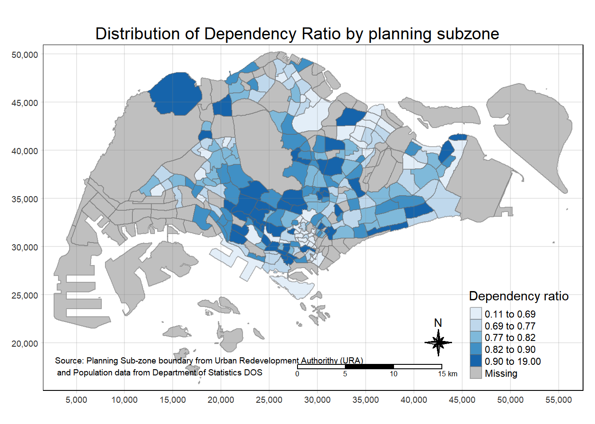
The basic elements to creating a tmap includes, tm_shape(), followed by other layer elements such as tm_fill() and/or tm_polygons().
In the code below, tm_shape() defines the input data and tm_polygons() tells
In the code chunk below, tm_shape() is used to define the input data (i.e mpsz_pop2020) and tm_polygons() is used to draw the planning subzone polygons
tm_shape(mpsz_pop2020) +
tm_polygons()
Drawing a choropleth map with tmap is rather simple. Simply specify the column name under tm_polygons.
tm_shape(mpsz_pop2020) +
tm_polygons("DEPENDENCY")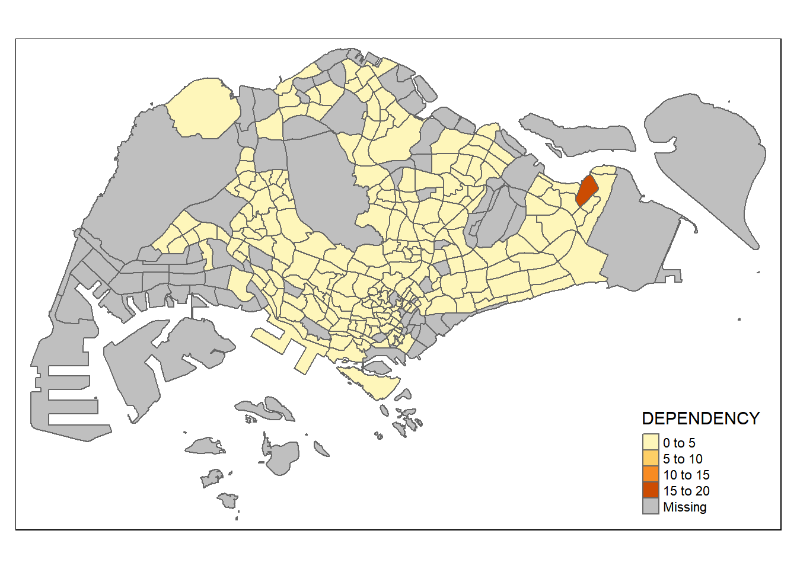
From the code above, we can understand from tm_polygons that:
The default interval binning used to draw the choropleth map is “pretty” which will be elaborated further in XX.XX.XX
The default colour scheme used is YlOrRd from ColorBrewer. This will be elaborated more in XX.XX.XX
By default, missing values are shaded in grey.
We can also use tm_fill() to draw a choropleth map.
tm_shape(mpsz_pop2020) +
tm_fill("DEPENDENCY")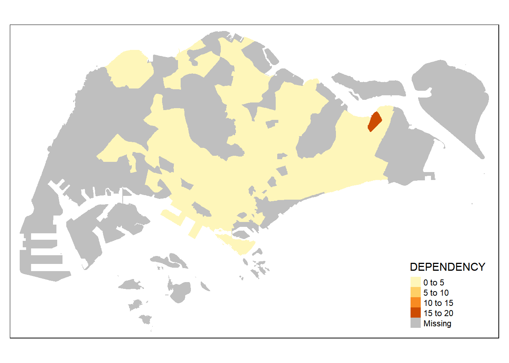
From the map above, we can see that the map is coloured, without any lines.
To introduce light borders, we can use tm_borders().
tm_shape(mpsz_pop2020)+
tm_fill("DEPENDENCY") +
tm_borders(lwd = 0.1, alpha = 1)For tm_borders(), there are four arguments that are accepted:
alpha = transparency, 0 = transparent, 1 = opaque
col = border color
lwd = border line width, default is 1
lty = border line type, default is “solid”
Most choropleth maps use some form of data classification, to group large numbers of observations into classes or n number of data ranges for classification.
tmap provides a total ten data classification methods: fixed, sd, equal, pretty (default), quantile, kmeans, hclust, bclust, fisher, and jenks.
The style argument of tm_fill() or tm_polygons() can be used to define a data classification method.
The code below uses a quantile classification method. Jenks classifies data according to the natural breaks within the data.
tm_shape(mpsz_pop2020)+
tm_fill("DEPENDENCY",
n = 5,
style = "jenks") +
tm_borders(alpha = 0.5)The code below uses equal style, which creates n = 5 ranges which are equal in range.
tm_shape(mpsz_pop2020)+
tm_fill("DEPENDENCY",
n = 5,
style = "equal") +
tm_borders(alpha = 0.5)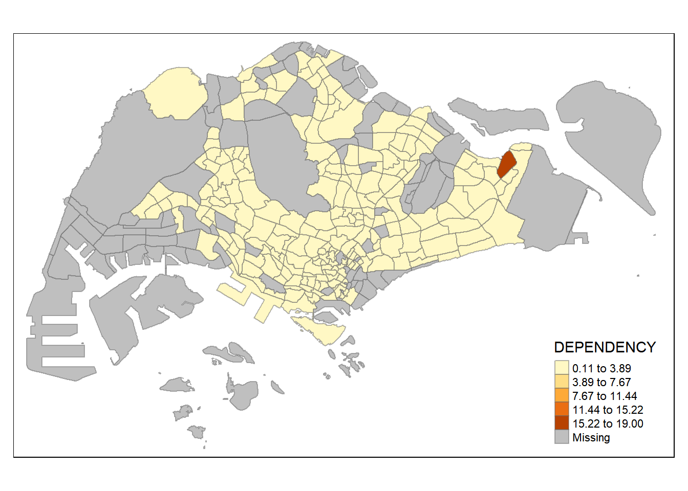
fixed:
Specify each range using the breaks argument manually. Does not require the use of n intervals.
tm_shape(mpsz_pop2020)+
tm_fill("DEPENDENCY",
style = "fixed",
breaks = c(-Inf, seq(0, 10, by = 2.5), Inf) ) +
tm_borders(alpha = 0.5)sd:
tm_shape(mpsz_pop2020)+
tm_fill("DEPENDENCY",
n = 5,
style = "sd") +
tm_borders(alpha = 0.5)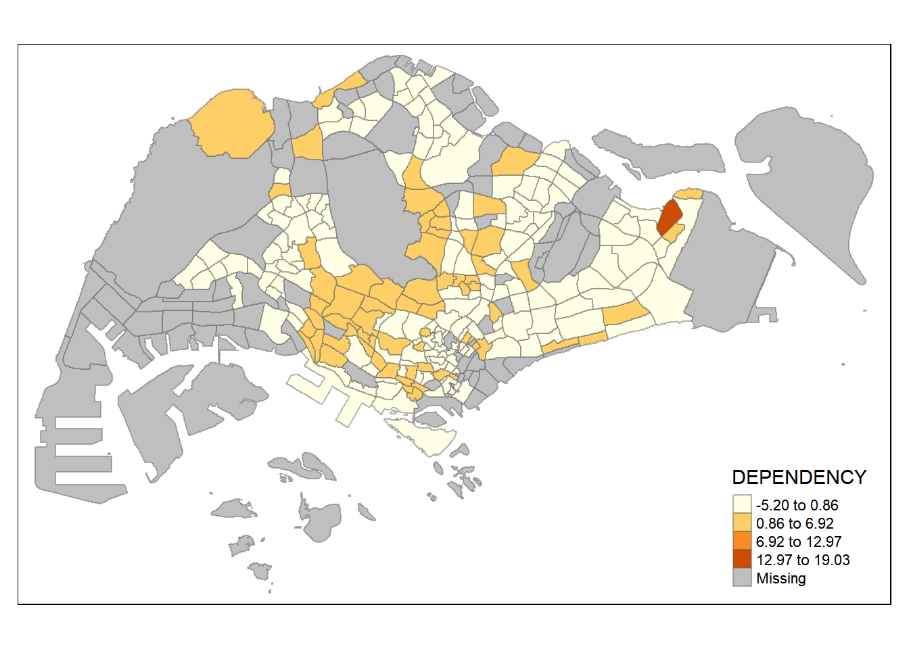
pretty:
tm_shape(mpsz_pop2020)+
tm_fill("DEPENDENCY",
n = 5,
style = "pretty") +
tm_borders(alpha = 0.5)kmeans:
tm_shape(mpsz_pop2020)+
tm_fill("DEPENDENCY",
n = 5,
style = "kmeans") +
tm_borders(alpha = 0.5)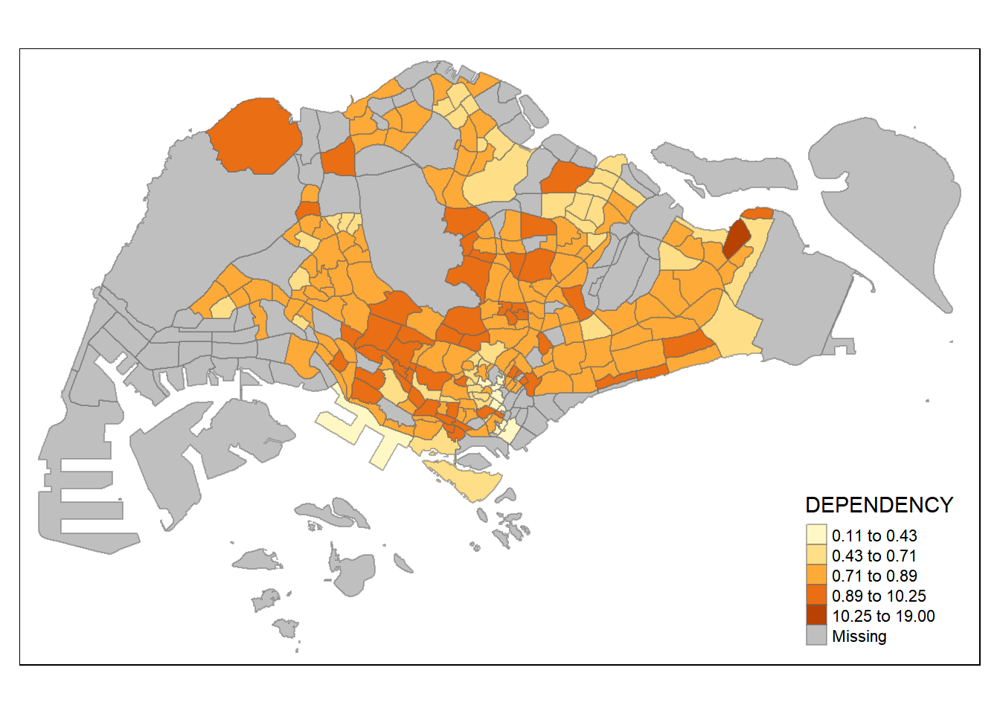
hclust:
tm_shape(mpsz_pop2020)+
tm_fill("DEPENDENCY",
n = 5,
style = "hclust") +
tm_borders(alpha = 0.5)bclust:
tm_shape(mpsz_pop2020)+
tm_fill("DEPENDENCY",
n = 5,
style = "bclust") +
tm_borders(alpha = 0.5)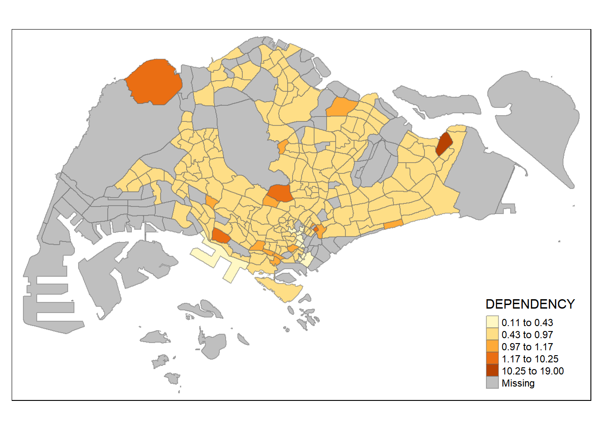
Committee Member: 1(1) 2(1) 3(1) 4(1) 5(1) 6(1) 7(1) 8(1) 9(1) 10(1)
Computing Hierarchical Clusteringfisher:
tm_shape(mpsz_pop2020)+
tm_fill("DEPENDENCY",
n = 5,
style = "fisher") +
tm_borders(alpha = 0.5)quantile:
tm_shape(mpsz_pop2020)+
tm_fill("DEPENDENCY",
n = 5,
style = "quantile") +
tm_borders(alpha = 0.5)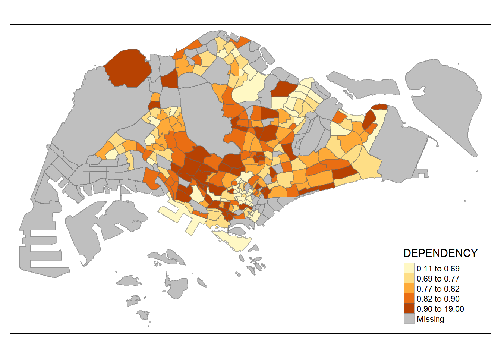
| Classification Name | Description |
|---|---|
| fixed | Based on breaks specified |
| sd | n number of ranges, must ensure distribution is approx. normal. Measure of dispersion/dispersion (z scores) |
| equal | n number of ranges (excluding missing values), equal widths for each range, avoid if data is skewed or large outlier values (as in example above) |
| pretty (default) | n number of ranges (including missing values), equal widths for each range, avoid if data is skewed or large outlier values (as in example above) |
| quantile | n number of ranges, equal number of observations in each range |
| kmeans | n number of ranges, runs euclidean distance computation between centroids and points and reassigns each points to closest cluster centroid until no change in cluster points or threshold is reached |
| hclust | n number of ranges, using divisive hierarchical clustering, splits until n number of clusters are obtained based on similarities with other points |
| bclust | n number of ranges, using bagged clustering |
| fisher | n number of ranges, using fisher clustering |
| jenks | n number of ranges, based on natural breaks |
n = 2:
tm_shape(mpsz_pop2020)+
tm_fill("DEPENDENCY",
n = 2,
style = "quantile") +
tm_borders(alpha = 0.5)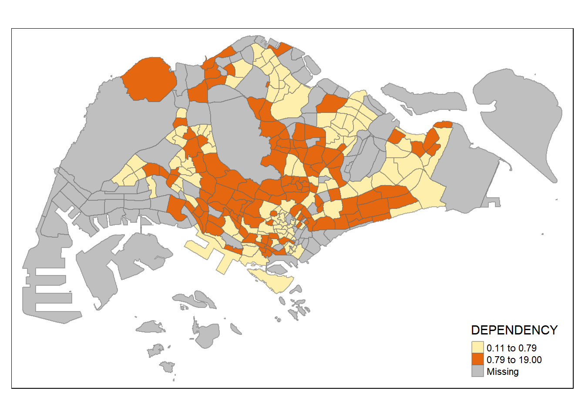
n = 5:
tm_shape(mpsz_pop2020)+
tm_fill("DEPENDENCY",
n = 5,
style = "quantile") +
tm_borders(alpha = 0.5)
n = 10:
tm_shape(mpsz_pop2020)+
tm_fill("DEPENDENCY",
n = 10,
style = "quantile") +
tm_borders(alpha = 0.5)n = 20:
tm_shape(mpsz_pop2020)+
tm_fill("DEPENDENCY",
n = 20,
style = "quantile") +
tm_borders(alpha = 0.5)As n amount of ranges increase, the colour differences between each subzone is more distinct. However, the amount of ranges depends on how fine grained the analysis has to be. Too many ranges could make it hard to pinpoint the exact colour and confuse users. Additionally, using quantile method, the outlier range (0.879 to 19.000) may mislead users as it is very similar in colour to the previous range (0.847 to 0.879)
We can specify breaks manually (as in the fixed style) instead of being automatically computed.
First, we need to know our min and max ranges of the data
summary(mpsz_pop2020$DEPENDENCY) Min. 1st Qu. Median Mean 3rd Qu. Max. NA's
0.1111 0.7147 0.7866 0.8585 0.8763 19.0000 92 To create custom breaks, we need to specify n+1 values to obtain n ranges as the values includes a min and max.
The code below creates breaks at 0.60, 0.70, 0.80, 0.90 with a min of 0 and max of 1.00.
tm_shape(mpsz_pop2020)+
tm_fill("DEPENDENCY",
breaks = c(0, 0.60, 0.70, 0.80, 0.90, 1.00)) +
tm_borders(alpha = 0.5)Warning: Values have found that are higher than the highest break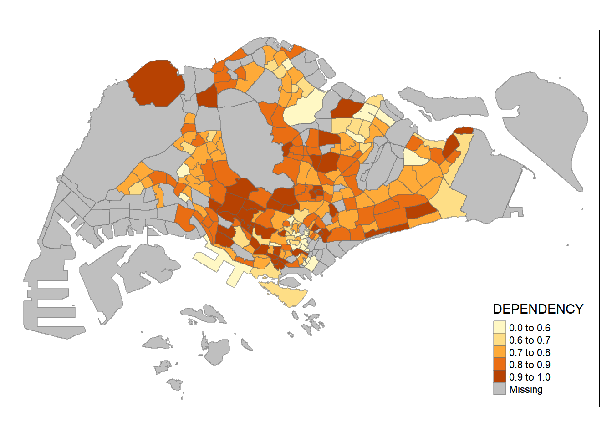
3.4 Colour Scheme
To change the colour, we can use the palette argument. Here, we will change it to the blues colour scheme.
tm_shape(mpsz_pop2020)+
tm_fill("DEPENDENCY",
n = 6,
style = "quantile",
palette = "Blues") +
tm_borders(alpha = 0.5)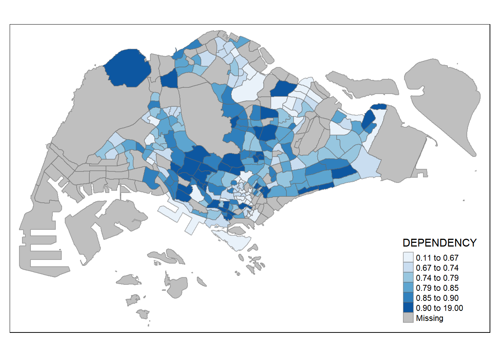
We can also reverse the colours using the - symbol infront of the desired color. In the below example, we use Greens.
tm_shape(mpsz_pop2020)+
tm_fill("DEPENDENCY",
style = "quantile",
palette = "-Greens") +
tm_borders(alpha = 0.5)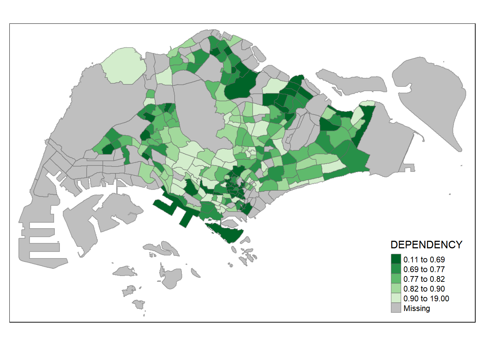
A map layout contains different elements that adds up into a single map.
Other than the objects to be mapped, map elements could include, title, scale bar, compass, margins, aspect ratios, colour settings and data classification methods.
There are several legend options to change the placement, format and appearance of the legend.
tm_shape(mpsz_pop2020)+
tm_fill("DEPENDENCY",
style = "jenks",
palette = "Blues",
legend.hist = TRUE,
legend.is.portrait = TRUE,
legend.hist.z = 0.1) +
tm_layout(main.title = "Distribution of Dependency Ratio by planning subzone \n(Jenks classification)",
main.title.position = "center",
main.title.size = 1,
legend.height = 0.45,
legend.width = 0.35,
legend.outside = FALSE,
legend.position = c("right", "bottom"),
frame = FALSE) +
tm_borders(alpha = 0.5)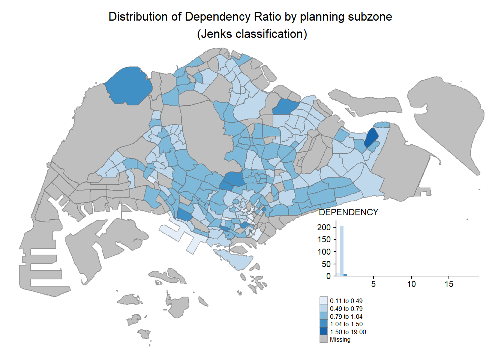
Map styles could be changed using the tmap_style() function from tmap. In the example below, the classic style is used.
tm_shape(mpsz_pop2020)+
tm_fill("DEPENDENCY",
style = "quantile",
palette = "-Greens") +
tm_borders(alpha = 0.5) +
tmap_style("classic")tmap style set to "classic"other available styles are: "white", "gray", "natural", "cobalt", "col_blind", "albatross", "beaver", "bw", "watercolor" 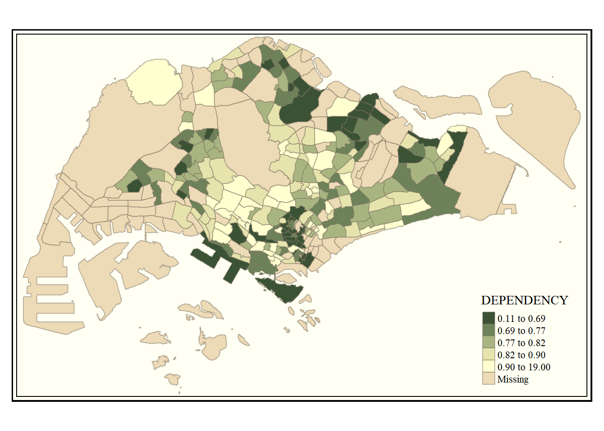
We can also draw various cartographic furniture onto the map, such as the scale bar, grid and compass.
tm_shape(mpsz_pop2020)+
tm_fill("DEPENDENCY",
style = "quantile",
palette = "Blues",
title = "No. of persons") +
tm_layout(main.title = "Distribution of Dependency Ratio \nby planning subzone",
main.title.position = "center",
main.title.size = 1.2,
legend.height = 0.45,
legend.width = 0.35,
frame = TRUE) +
tm_borders(alpha = 0.5) +
tm_compass(type="8star", size = 2) +
tm_scale_bar(width = 0.15) +
tm_grid(lwd = 0.1, alpha = 0.2) +
tm_credits("Source: Planning Sub-zone boundary from Urban Redevelopment Authorithy (URA)\n and Population data from Department of Statistics DOS",
position = c("left", "bottom"))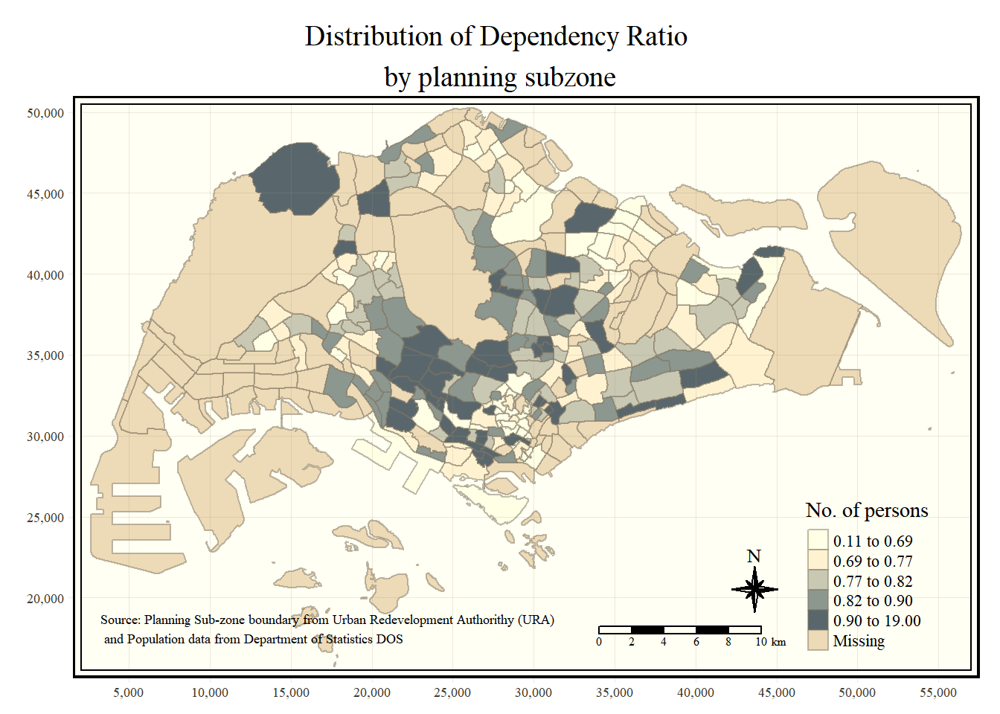
To reset the map to the default style, we can use the code below:
tmap_style("white")tmap style set to "white"other available styles are: "gray", "natural", "cobalt", "col_blind", "albatross", "beaver", "bw", "classic", "watercolor" We can draw multiple small maps, also known as facet maps, arranged horizontally or stacked vertically to allow us to visualise how spatial relationships change with respect to another variable, such as time.
Using tmap, we can plot multiple small maps in three ways:
assigning multiple values to at least one of the aesthetic arguments (eg. tmap_fill() or tmap_polygons())
defining a group-by variable in tm_facets()
creating multiple stand-alone maps with tmap_arrange()
In the example below, we specify multiple values using the c()
tm_shape(mpsz_pop2020)+
tm_fill(c("YOUNG", "AGED"),
style = "equal",
palette = "Blues") +
tm_layout(legend.position = c("right", "bottom")) +
tm_borders(alpha = 0.5) +
tmap_style("white")tmap style set to "white"other available styles are: "gray", "natural", "cobalt", "col_blind", "albatross", "beaver", "bw", "classic", "watercolor" 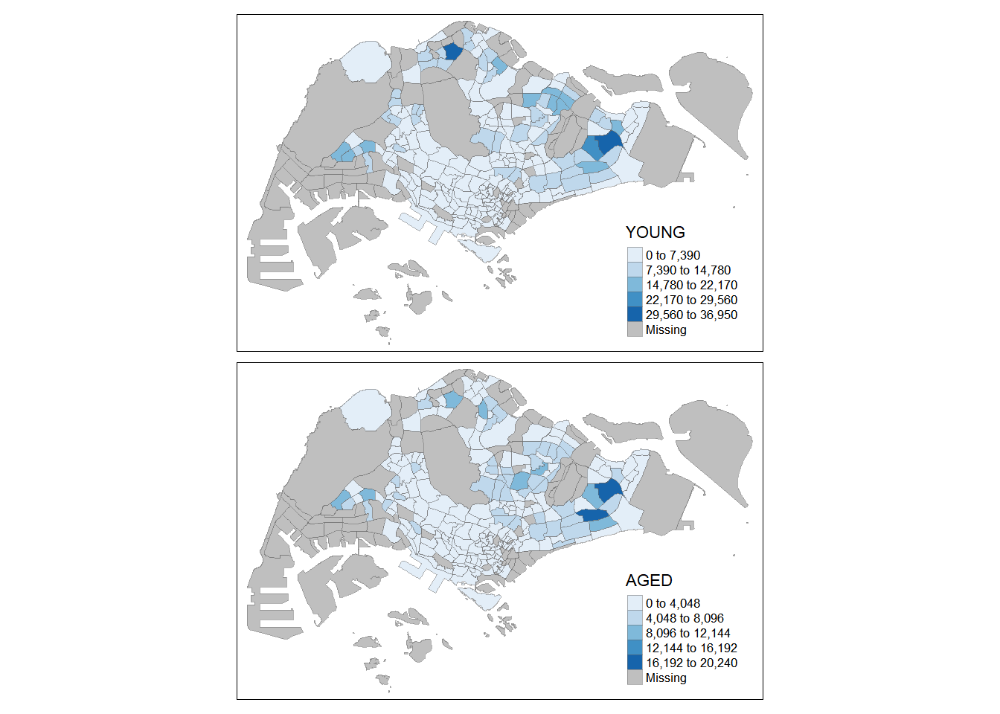
We can also specifically specify style and palette arguments for each map as shown below:
tm_shape(mpsz_pop2020)+
tm_polygons(c("DEPENDENCY","AGED"),
style = c("equal", "quantile"),
palette = list("Blues","Greens")) +
tm_layout(legend.position = c("right", "bottom"))In the example below, we create multiple maps using tm_facets(). The map is generated based on different values under the REGION_N column.
tm_shape(mpsz_pop2020) +
tm_fill("DEPENDENCY",
style = "quantile",
palette = "Blues",
thres.poly = 0) +
tm_facets(by="REGION_N",
free.coords=TRUE,
drop.shapes=TRUE) +
tm_layout(legend.show = FALSE,
title.position = c("center", "center"),
title.size = 20) +
tm_borders(alpha = 0.5)Warning: The argument drop.shapes has been renamed to drop.units, and is
therefore deprecated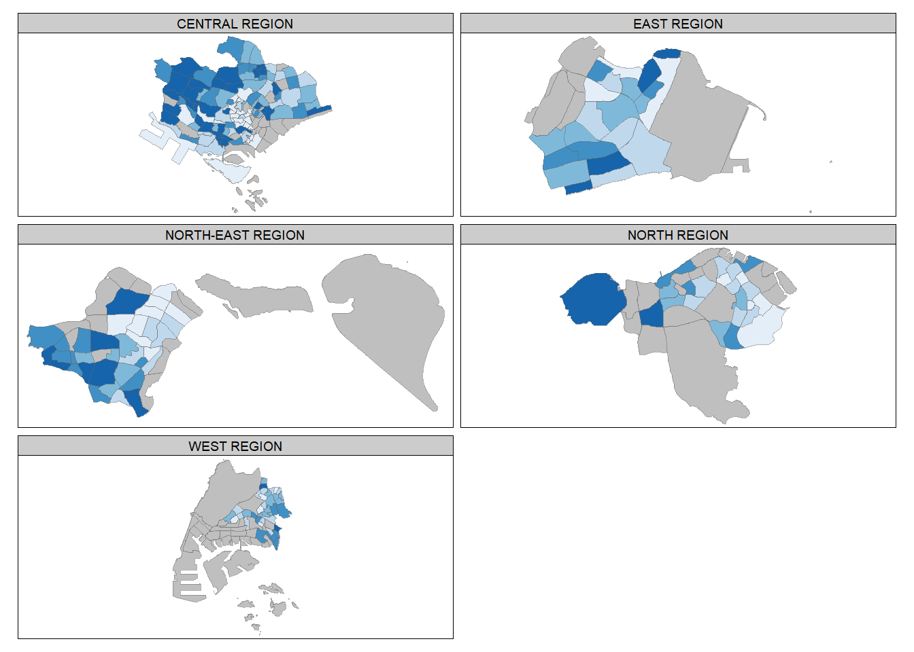
In the example below, we create multiple maps specified individually using tmap_arrange()
youngmap <- tm_shape(mpsz_pop2020)+
tm_polygons("YOUNG",
style = "quantile",
palette = "Blues")
agedmap <- tm_shape(mpsz_pop2020)+
tm_polygons("AGED",
style = "quantile",
palette = "Blues")
tmap_arrange(youngmap, agedmap, asp=1, ncol=2)Instead of creating multiple choropleth maps, we can also use the selection function to map spatial objects meeting a certain criterion. In the example below, we only map objects that are in the CENTRAL REGION.
tm_shape(mpsz_pop2020[mpsz_pop2020$REGION_N=="CENTRAL REGION", ])+
tm_fill("DEPENDENCY",
style = "quantile",
palette = "Blues",
legend.hist = TRUE,
legend.is.portrait = TRUE,
legend.hist.z = 0.1) +
tm_layout(legend.outside = TRUE,
legend.height = 0.45,
legend.width = 5.0,
legend.position = c("right", "bottom"),
frame = FALSE) +
tm_borders(alpha = 0.5)Warning in pre_process_gt(x, interactive = interactive, orig_crs =
gm$shape.orig_crs): legend.width controls the width of the legend within a map.
Please use legend.outside.size to control the width of the outside legend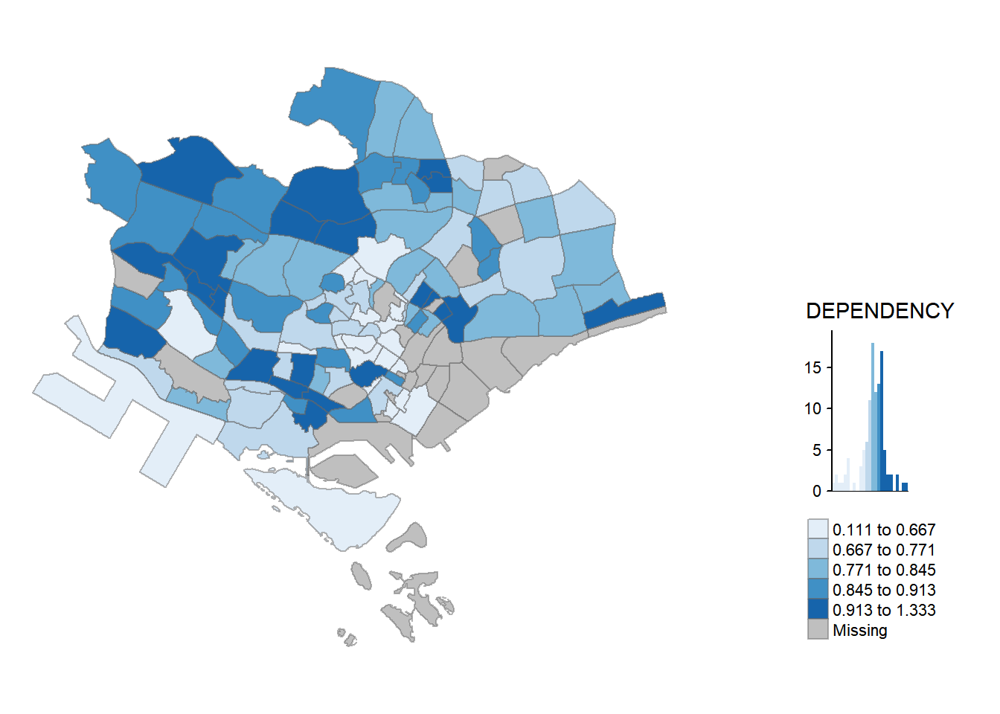